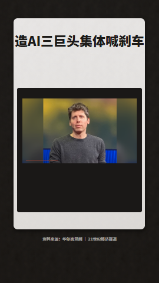

AI 要不要踩刹车？1080×1920 · 84 秒
我的作品
美联储加息素材包 · 31 个素材
导入内容
素材包中的文案、图片和视频会自动整理到下一步。
拖入 ZIP 素材包
包含 content.json 的素材包，最大 512 MB
✓
已识别：
口播文案 530 字 · 图片 21 张 · 视频 10 段 · 预计 88 秒
确认视频内容
先确定文案和整体风格，下一步再逐镜头检查画面。
开场标题
口播文案
画面风格

编辑部纸卡 · 高亮标题
配音
云希男声 · 沉稳
语速+10%
更多设置（背景音乐、字幕、音效）
背景音乐明快节奏 · 音量 20%
字幕开启
智能音效开启
下一步将用 AI 规划分镜并逐镜头配画面，通常需要一到两分钟。
看看每句话对应什么画面
检查配图和重点文字，满意后再生成视频。
口播
最近，关于人工智能是否应该放缓发展的讨论，突然变得非常激烈。
这一镜的画面
当前素材片头标题卡
画面重点标题：AI 要不要踩刹车？
镜头概览
点击缩略图直接跳到那一镜
正在生成视频
- ·生成配音
- ·规划分镜
- ·渲染画面
- ·混音与音效
- ·画面检查
可以离开此页，稍后从"我的作品"查看进度。
视频已完成
还需要调整？